Independent advisory · Zürich
Clear-eyed judgement on technology, product, and organizational leadership.
For executive teams and investors in robotics, physical AI, and complex engineered products.
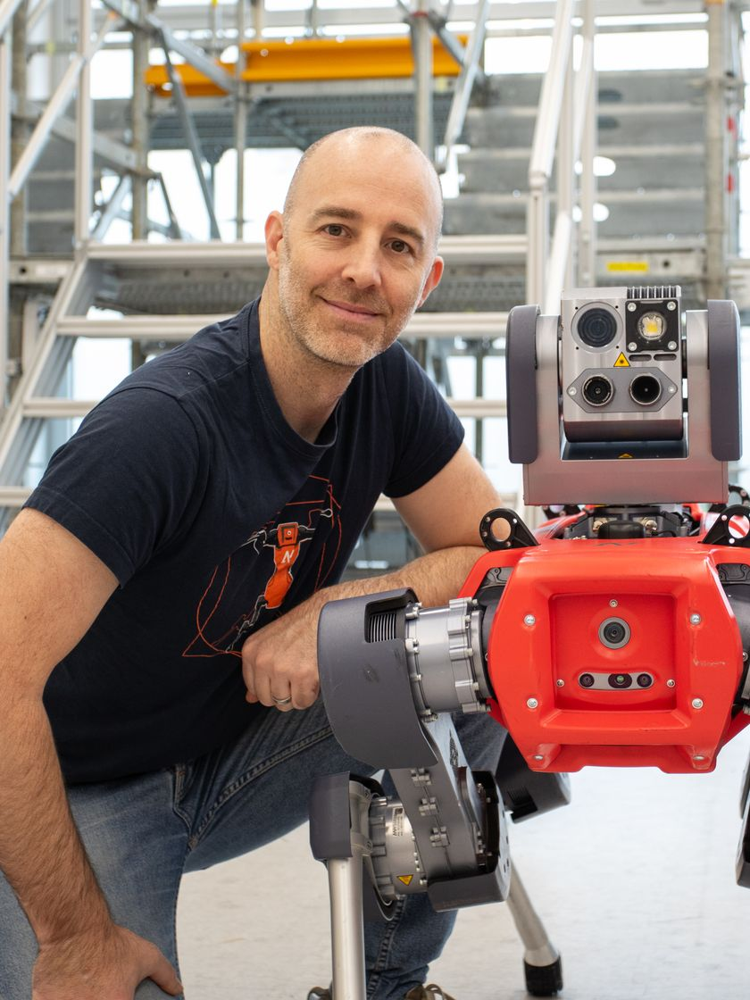
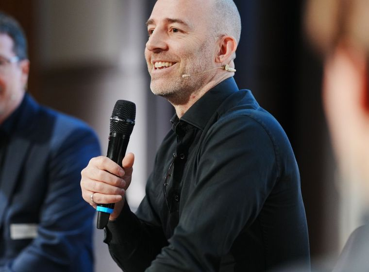
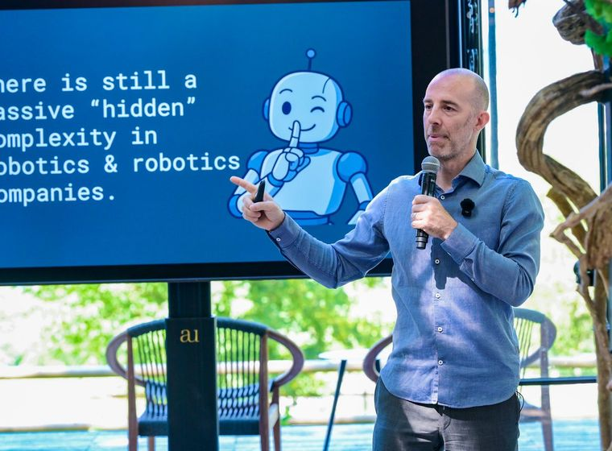
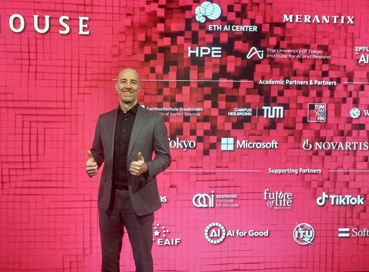
What I do
Executive and board advisory
Product strategy, technology direction, and the organizational design that has to carry them. Working with executive leadership and boards.
Investment due diligence and portfolio support
Independent assessment of company strategy, product and business model strength, technical claims, engineering maturity, and commercialization risk ahead of an investment — and hands-on work with the portfolio company afterwards. I assess the overall strength of technology companies so you can decide on solid ground; I help your investment committee reach its own decision. After the investment, I help the portfolio company become stronger.
Speaking, facilitation, and executive education
Keynotes, panels, executive programmes, and facilitated workshops on robotics, physical AI, and what they demand of leadership. Built so that teams leave with skills, not just slides.
Coaching for technology leaders
One-to-one work with CEOs, CPOs, CTOs, and founders growing into their roles, and growing their organizations.
About
I have spent two decades turning difficult technology into products people buy — across MedTech, EdTech, AI, Robotics, and FinTech.
Doctorate from ETH Zürich. Five years on the C-team at ANYbotics, the Zürich legged-robotics company, latterly as CTO Solutions. Before that CPO and CTO at Labster.
Trained as a trainer and workshop facilitator. For over 20 years I have designed and led international leadership development seminars at more than 100 conferences and events around the globe, and built train-the-trainer programmes in several countries. An excellent talk transfers information and stirs emotion; a well-designed session transfers skills. I do both, so that individuals, teams, and whole organizations actually learn.
Currently Head of Product Management at TWINT. Venture Partner at ellipsis Venture, covering robotics and AI. Lecturer at CEIBS on robotics, AI, and innovation, and what they demand of executive and organizational leadership.
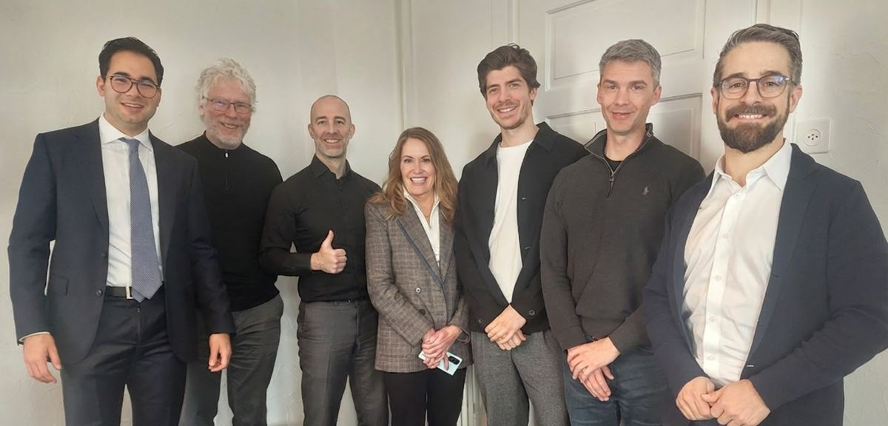
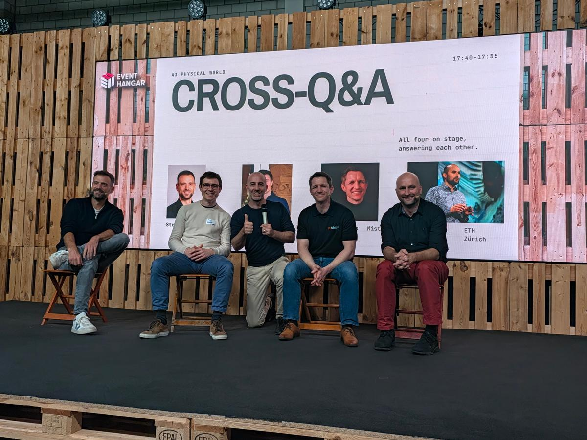
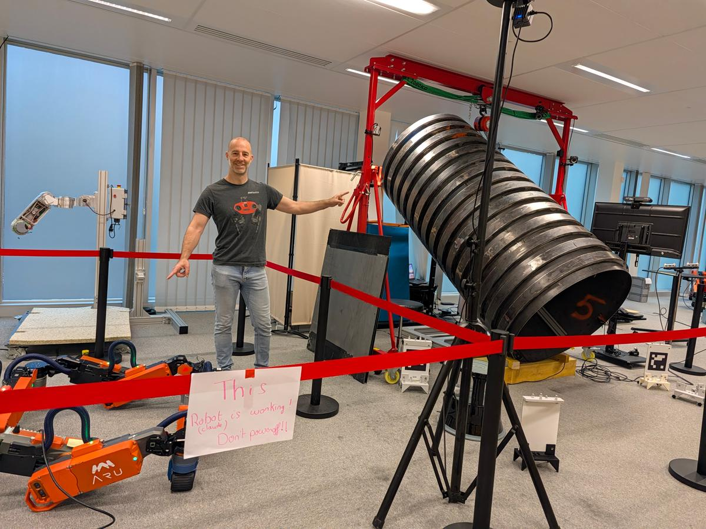
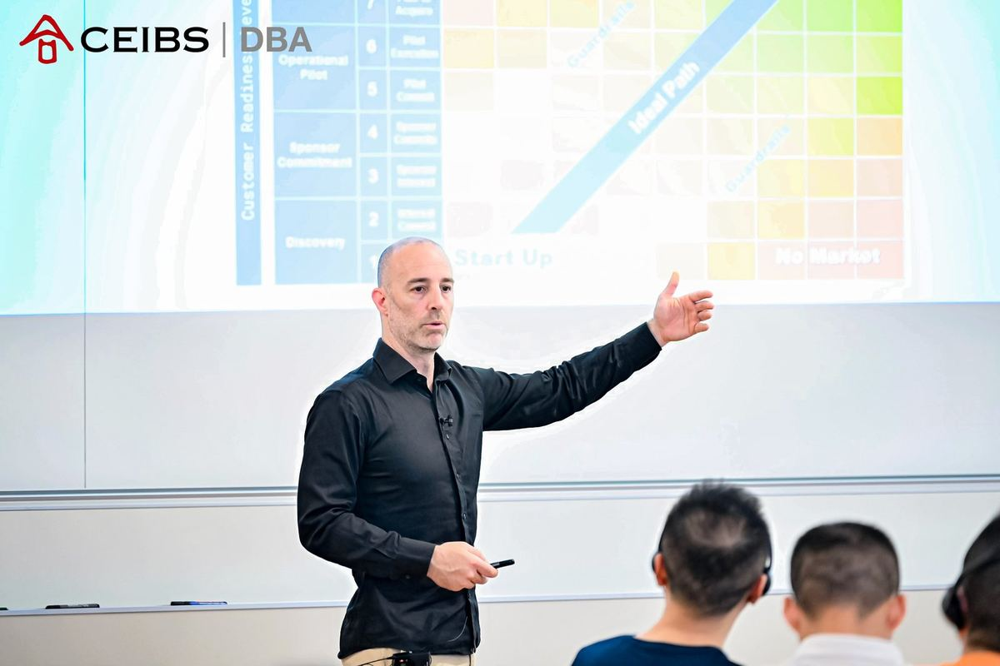
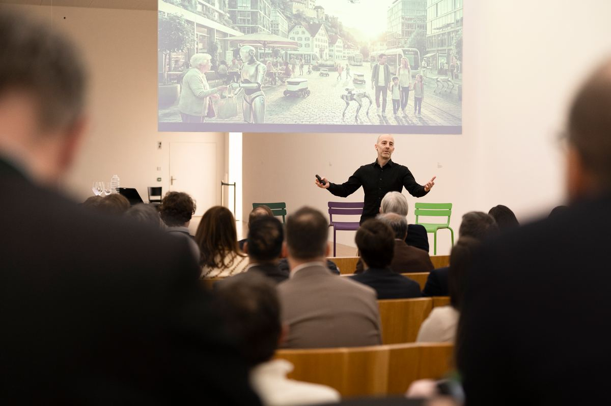
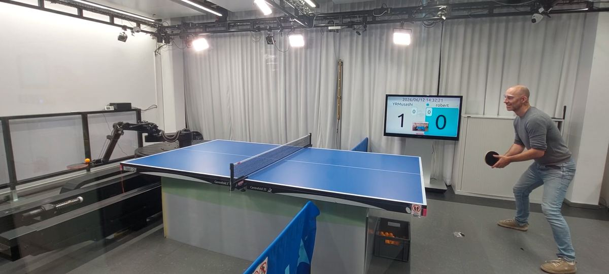
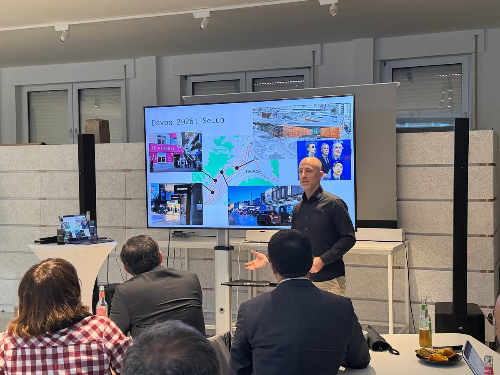
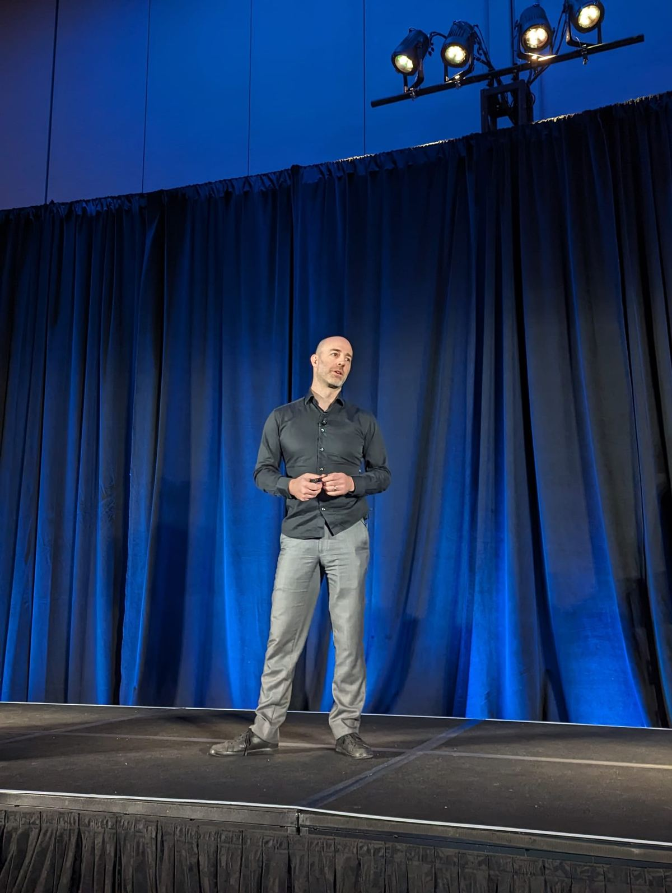
Current engagements
- Robotics deal flow and investment thesis work for an investment firm in Liechtenstein
- Advisory board of Nio Robotics, France
- Advisory to Lupa, an agentic-AI startup in Zürich
- Advisory to Mac n Cheese Games, an independent games studio
Other clients are described without names as a matter of course. References are available on request.
Insights
- Product Leadership in Robotics: A Framework for Structural Commercialization (Learn over Earn)3.4k impressions · 31 reactions · 12 comments on LinkedIn
- Healthily Challenging: The Leadership Setup Where People Truly Thrive1.1k impressions · 22 reactions · 5 comments on LinkedIn
- Should Switzerland embrace being the "CERN of robotics"?5.7k impressions · 60 reactions · 20 comments on LinkedIn
Show all 8 articlesShow fewer
- The Hidden Magic of Unplanned Capacity: Push teams to their potential, not their limits2.1k impressions · 29 reactions · 8 comments on LinkedIn
- High-Velocity Decision-Making for Individuals and Teams1.9k impressions · 13 reactions · 5 comments on LinkedIn
- Integrative Decision-Making (Bits of Holacracy for Any Organization)2.5k impressions · 15 reactions · 4 comments on LinkedIn
- Higher Engagement with Tactical Meetings (Bits of Holacracy for Any Organization)2.3k impressions · 19 reactions · 3 comments on LinkedIn
- My Journey Beyond Numbers to Humanity in Leadership2.5k impressions · 23 reactions · 6 comments on LinkedIn
Contact